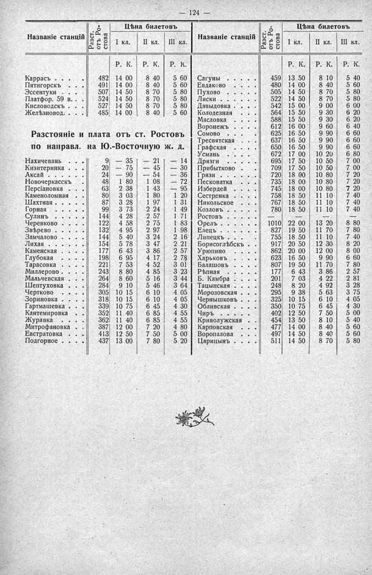

Лист источника 170
Скан

Распознанный текст
— 124 —
Разст. отъ Ро-стова
Цѣна билетовъ
I кл. II кл. III кл.
Р. К. Р. К. Р. К.
Названіе станцій
Каррасъ . . . . 482 14 00 8 40 5 60
Пятигорскъ . . . 491 14 00 8 40 5 60
Эссентуки . . . 507 14 50 8 70 5 80
Платфор. 59 в. . 524 14 50 8 70 5 80
Кисловодскъ . . 527 14 50 8 70 5 80
Желѣзновод. . . 485 14 00 8 40 5 60
Разстояніе и плата отъ ст. Ростовъ
по направл. на Ю.-Восточную ж. д.
Нахичевань . . . 9 — 35 — 21 — 14
Кизитеринка . . 20 — 75 — 45 — 30
Аксай . . . . . 24 — 90 — 54 — 36
Новочеркасскъ . 48 1 80 1 08 — 72
Персіановка . . 63 2 38 1 43 — 95
Каменоломная . 80 3 03 1 80 1 20
Шахтная . . . . 87 3 28 1 97 1 31
Горная . . . . . 99 3 73 2 24 1 49
Сулинъ . . . . . 144 4 28 2 57 1 71
Черевково . . . 122 4 58 2 75 1 83
Звѣрево . . . . 132 4 95 2 97 1 98
Замчалово . . . 144 5 40 3 24 2 16
Лихая . . . . . 154 5 78 3 47 2 21
Каменская . . . 177 6 43 3 86 2 57
Глубокая . . . . 198 6 95 4 17 2 78
Тарасовка . . . 221 7 53 4 52 3 01
Миллерово . . . 243 8 80 4 85 3 23
Мальчевская . . 264 8 60 5 16 3 44
Шептуховка . . 284 9 10 5 46 3 64
Чертково . . . . 305 10 15 6 10 4 05
Зориновка . . . 318 10 15 6 10 4 05
Гартмашевка . . 339 10 75 6 45 4 30
Кантемировка . 352 11 40 6 85 4 55
Журавка . . . . 362 11 40 6 85 4 55
Митрофановка . 387 12 00 7 20 4 80
Евстратовка . . 413 12 50 7 50 5 00
Подгорное . . . 437 13 00 7 80 5 20
Разст. отъ Ро-стова
Цѣна билетовъ
I кл. II кл. III кл.
Р. К. Р. К. Р. К.
Названіе станцій
Сагуны . . . . . 459 13 50 8 10 5 40
Евдаково . . . . 480 14 00 8 40 5 60
Пухово . . . . . 505 14 50 8 70 5 80
Лиски . . . . . 522 14 50 8 70 5 80
Давыдовка . . . 542 15 00 9 00 6 00
Колодезная . . . 564 15 50 9 30 6 20
Масловка . . . . 588 15 50 9 30 6 20
Воронежъ . . . 612 16 00 9 60 6 40
Сомово . . . . . 625 16 50 9 90 6 60
Тресвятская . . 637 16 50 9 90 6 60
Графская . . . . 650 16 50 9 90 6 60
Усмань . . . . . 672 17 00 10 20 6 80
Дрязги . . . . . 695 17 50 10 50 7 00
Прибытково . . 709 17 50 10 50 7 00
Грязи . . . . . 720 18 00 10 80 7 20
Песковатка . . 735 18 00 10 80 7 20
Избердей . . . . 745 18 00 10 80 7 20
Сестренка . . . 758 18 50 11 10 7 40
Никольское . . 767 18 50 11 10 7 40
Козловъ . . . . 780 18 50 11 10 7 40
Ростовъ . . . . — — — —
Орелъ . . . . . 1010 22 00 13 20 8 80
Елецъ . . . . . 827 19 50 11 70 7 80
Липецкъ . . . . 755 18 50 11 10 7 40
Борисоглѣбскъ . 917 20 50 12 30 8 20
Урюпино . . . . 862 20 00 12 00 8 00
Харьковъ . . . . 623 16 50 9 90 6 60
Балашовъ . . . 807 19 50 11 70 7 80
Рѣпная . . . . . 177 6 43 3 86 2 57
Б. Камбра . . . 201 7 03 4 22 2 81
Тацынская . . . 248 8 20 4 92 3 28
Морозовская . . 295 9 38 5 63 3 75
Чернышковъ . . 325 10 15 6 10 4 05
Обливская . . . 350 10 75 6 45 4 30
Чиръ . . . . . . 402 12 50 7 50 5 00
Криволужская . 454 13 50 8 10 5 40
Карповская . . 477 14 00 8 40 5 60
Воропалова . . 497 14 50 8 40 5 60
Царицынъ . . . 511 14 50 8 70 5 80